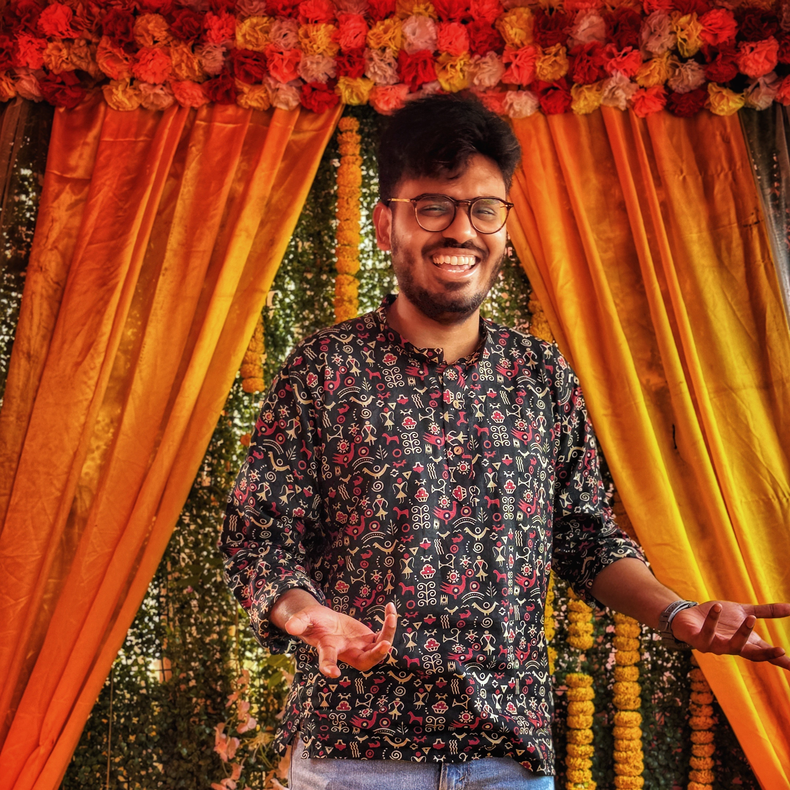
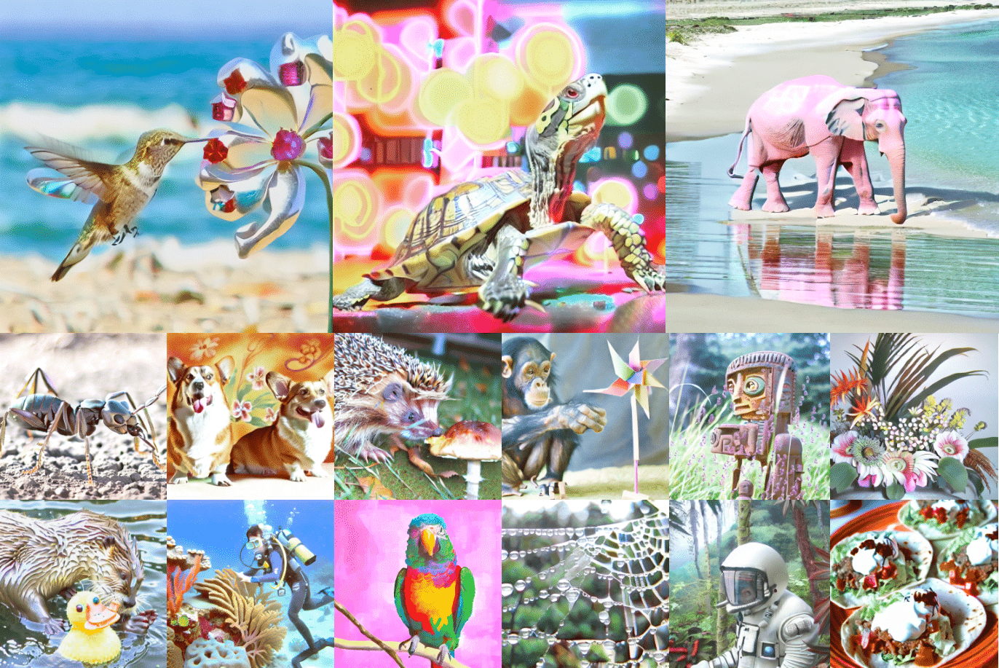
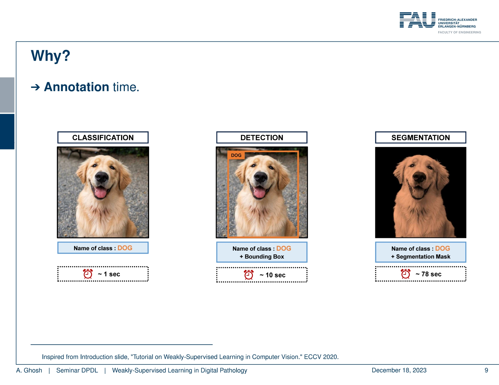
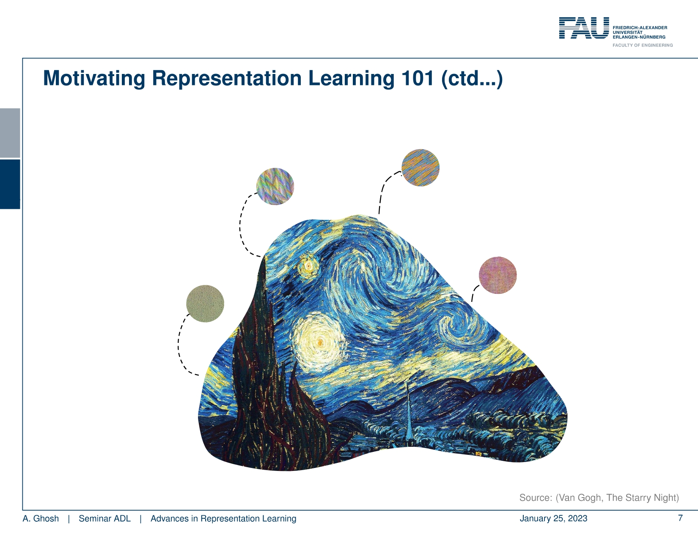

I am a (happy) 1st year Ph.D. student in Computer Vision at Institut Polytechnique de Paris (IMAGINE Lab) under the supervision of David Picard. My main research interest lies in multi-modal generative models and the generalization of such multimodal models. Prior to my Ph.D. I completed my M.Sc. in Artificial Intelligence from University Erlangen-Nürnberg, Germany.

* Equal contribution
ArXiV, 2025
Recent text-to-image (T2I) generation models have achieved remarkable results by training on billion-scale datasets, following a 'bigger is better' paradigm that prioritizes data quantity over quality. We challenge this established paradigm by demonstrating that strategic data augmentation of small, well-curated datasets can match or outperform models trained on massive web-scraped collections. Using only ImageNet enhanced with well-designed text and image augmentations, we achieve a +2 overall score over SD-XL on GenEval and +5 on DPGBench while using just 1/10th the parameters and 1/1000th the training images. Our results suggest that strategic data augmentation, rather than massive datasets, could offer a more sustainable path forward for T2I generation.

